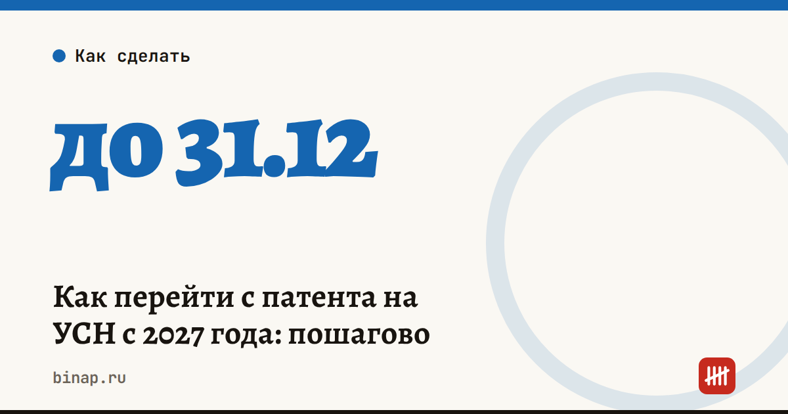

Как перейти с патента на УСН с 2027 года: пошагово

Чтобы с 1 января 2027 года работать на УСН вместо патента или вместе с ним, подайте в налоговую уведомление о переходе на упрощёнку до 31 декабря 2026 года. Опоздаете — до следующего года останетесь на патенте, а всё, что под него не подходит, налоговая посчитает по общей системе.
Коротко
- Лимит дохода на патенте в 2027 году — 15 млн ₽, с 2028 года — 10 млн ₽.
- Уведомление о переходе на УСН — до 31 декабря, по форме 26.2-1.
- Патент и УСН можно совмещать: УСН становится «страховкой», если доход превысит лимит.
- Новый патент на 2027 год подают не позднее чем за 10 рабочих дней до начала его срока.
- После перехода нужно поменять систему налогообложения в кассе и начать платить авансы по УСН.
Три варианта на 2027 год
| Вариант | Кому подходит | Что подать |
|---|---|---|
| Остаться только на патенте | Доход уверенно ниже 15 млн ₽, вся работа подходит под патент | Заявление на патент на 2027 год |
| Патент + УСН | Доход близко к лимиту или есть работа вне патента | Заявление на патент и уведомление о переходе на УСН |
| Только УСН | Доход выше 15 млн ₽ или патент в вашем регионе дорогой | Уведомление о переходе на УСН, патент не продлевать |
Совмещение — самый безопасный вариант для тех, кто сомневается. Если вы потеряете право на патент, налоги пересчитают по УСН, а не по общей системе с НДФЛ и сложным учётом. Что происходит при утрате права, мы разбирали в статье про уведомление за 10 дней.
Пошагово
- Посчитайте доход. Сложите доходы за 2026 год по всем патентам и УСН и сделайте прогноз на 2027-й. Если выходит больше 12–13 млн ₽, держите запас и готовьте УСН.
- Выберите объект УСН. «Доходы» (6%) или «доходы минус расходы» (15%). Регион может снизить ставки. Посчитать на своих цифрах можно в калькуляторе УСН.
- Подайте уведомление о переходе на УСН до 31 декабря. Форма 26.2-1, через личный кабинет ИП, ЭДО или в инспекции. Сохраните квитанцию о приёме.
- Решите с патентом. Если остаётесь на нём в 2027 году, подайте заявление не позднее чем за 10 рабочих дней до начала срока патента.
- Перенастройте кассу. С 1 января в чеках должна быть новая система налогообложения. Поменяйте её в настройках кассы и сформируйте отчёт об изменении параметров регистрации — это делается через кабинет оператора фискальных данных или сервис кассы.
- Заведите учёт по УСН. Книга учёта доходов и расходов, авансы по итогам квартала — до 28 апреля, 28 июля и 28 октября, уведомления до 25-го. Все даты — в налоговом календаре ИП на 2027 год.
Частые ошибки
- Ждать, пока доход превысит лимит. Перейти на УСН задним числом в середине года нельзя, поэтому уведомление нужно подать заранее, до 31 декабря.
- Считать доход только по патенту. Для лимита складывают доходы по всем патентам и по УСН, если вы их совмещаете.
- Забыть про работу вне патента. Всё, что не подходит под вид деятельности в патенте, облагается по другому режиму. Как это обходится, — в разборе патент не на ту услугу.
- Не проверить НДС. На УСН есть порог дохода, после которого появляется НДС. Подробно — в статье про порог НДС 20 млн ₽.
Частые вопросы
Можно ли перейти с патента на УСН в середине года? Добровольно — нет: на УСН переходят с 1 января по уведомлению, поданному до 31 декабря. Исключение — новые ИП, которые подают уведомление в течение 30 дней после регистрации.
Если я подам уведомление на УСН, нужно ли отказываться от патента? Нет. Патент и УСН можно совмещать: на патенте — виды деятельности, указанные в нём, на УСН — всё остальное.
Что будет, если не подать уведомление и потерять патент? Налоги за период патента пересчитают по общей системе: НДФЛ, а при большом доходе — и НДС.